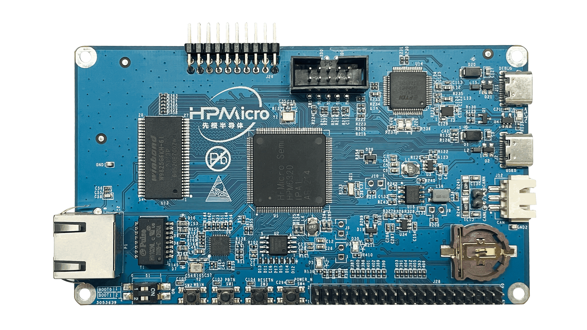

4. HPM6300EVK开发板¶
4.1. 概述¶

控制台串口参数：
波特率：115200
数据位：8位
校验位：无
停止位：1
流控位：无
数据编码方式：ASCII
4.2. 拨码开关 S1¶
Bit 1，2控制启动模式
Bit[2:1] |
功能描述 |
|---|---|
OFF, OFF |
Quad SPI NOR flash 启动 |
OFF, ON |
串行启动 |
ON, OFF |
在系统编程 |
4.3. 按键¶
名称 |
功能 |
|---|---|
PBUTN (SW1) |
电源按键, TinyUF2 Boot按键, GPIO 按键 |
WBUTN (SW2) |
WAKE UP 按键 |
RESETN (SW3) |
Reset 按键 |
4.4. 引脚描述¶
SPI引脚：
功能 |
位置 |
|---|---|
SPI3.CSN |
J28[24] |
SPI3.SCLK |
J28[23] |
SPI3.MISO |
J28[21] |
SPI3.MOSI |
J28[19] |
I2C引脚：
功能 |
位置 |
|---|---|
I2C0.SCL |
J28[13] |
I2C0.SDA |
J28[15] |
ACMP引脚
功能 |
位置 |
|---|---|
CMP.INN5 |
J26[7] |
CMP.COMP_1 |
J26[5] |
GPTMR引脚
功能 |
位置 |
|---|---|
GPTMR2.CAPT_2 |
J28[40] |
GPTMR2.COMP_2 |
J28[35] |
ADC16引脚
功能 |
位置 |
|---|---|
ADC0.INA13/ADC1.INA9/ADC2.INA5 |
J26[6] |
DAC引脚
功能 |
位置 |
|---|---|
DCA0.OUT |
J26[11] |